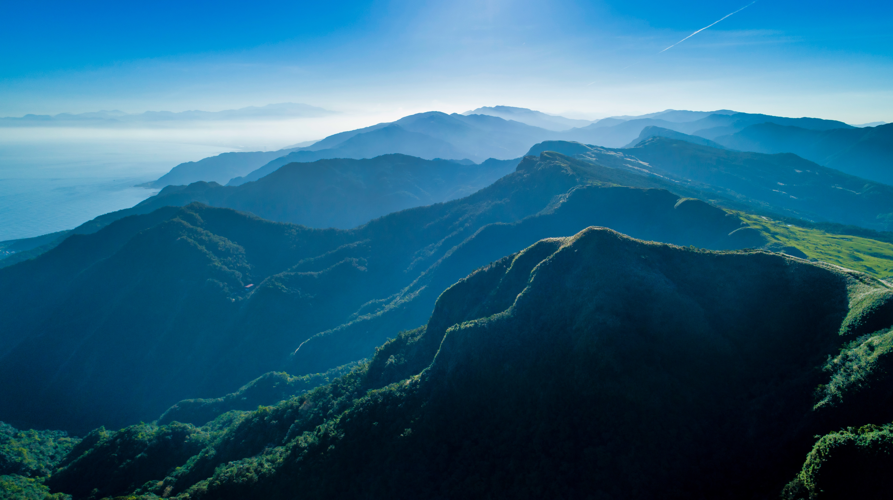
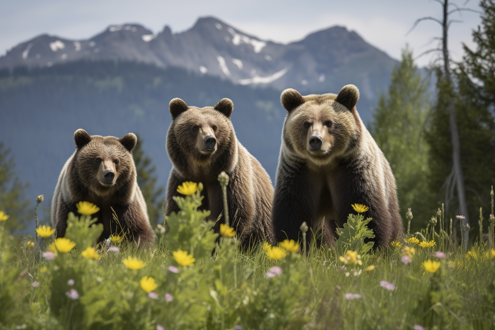

Meet David Lee:
The Story Behind the Lens
Hi, I'm David Lee, a passionate wildlife and nature photographer based in Winnipeg, Manitoba.
I believe that photography is more than just capturing an image; it's about revealing the hidden beauty of the natural world and sharing the stories that unfold within it.
My Journey
My fascination with nature began in childhood, exploring Riding Mountain National Park and marveling at the intricate details of the flora and fauna around me. This early curiosity led me to pick up my first camera, a Nikon D3300, and I haven't looked back since.
Over the years, I've honed my craft, traveling to diverse landscapes and capturing breathtaking moments of wildlife in their natural habitats. From the majestic polar bears of Churchill to the delicate orchids in the Spruce Woods Provincial Forest, each photograph holds a special place in my heart.
Awards & Recognition
- National Geographic Award for Nature Photographer of the Year - 2022
- Wildlife Photographer of the Year - People's Choice Award - 2021
- Honorable Mention - International Landscape Photographer of the Year - 2020

My Vision
Through my photography, I aim to inspire a deeper appreciation for the wonders of nature and foster a sense of responsibility for its preservation. I hope that my images not only captivate your eyes but also ignite a spark of curiosity within you to explore and protect the natural world around us.

Beyond the Lens
When I'm not behind the camera, you can find me hiking the Trans Canada Trail, canoeing on Lake Winnipeg, or leading photography workshops for aspiring photographers. I'm also a firm believer in giving back to the community and regularly volunteer with the Canadian Parks and Wilderness Society to support conservation efforts.